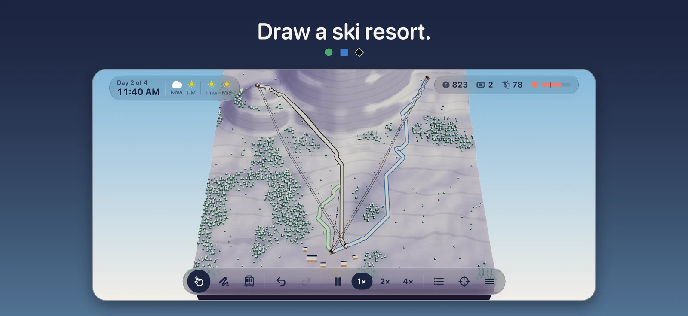
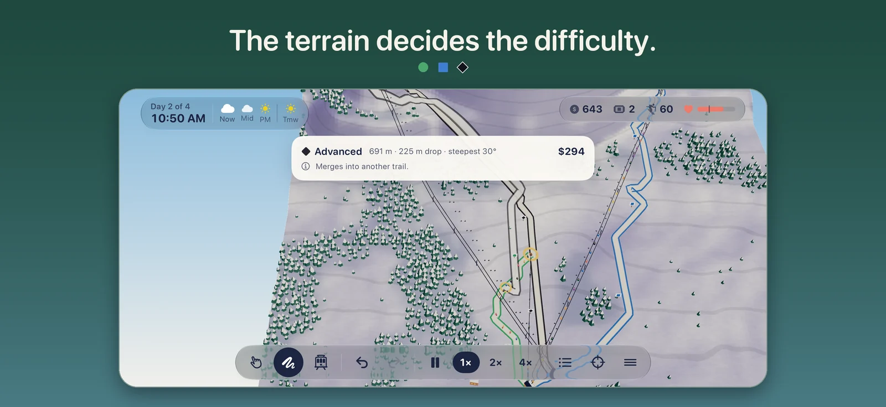
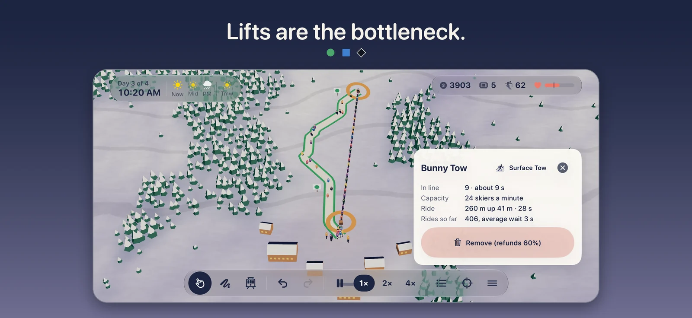
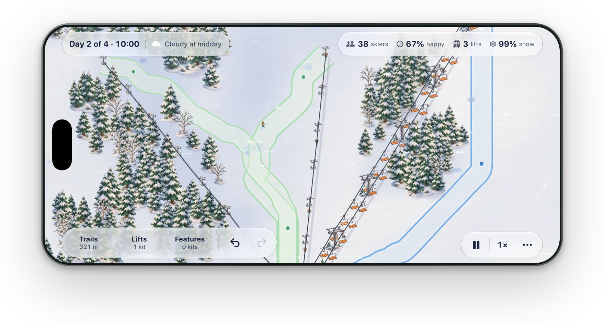

A ski-resort game for iPhone and iPad
A little mountain. A thousand possibilities.
Draw trails and lifts on a tiny mountain and watch hundreds of skiers bring it to life. One price. No ads. No in-app purchases.
Screenshots




How it plays
Draw trails. Watch them ski.
Snowline is calm and strategic. You shape the resort; hundreds of tiny skiers decide whether it works.
- One
Draw the trails
Sketch runs down a mountain generated fresh for every game. A trail's difficulty comes from the real slope it crosses, so the ground decides what is beginner and what is expert.
- Two
Build the lifts
Trails carry skiers down; lifts carry them back up. Lifts are the uphill bottleneck, and the queues show you where your resort is struggling.
- Three
Watch them ski
Skiers arrive with different abilities, queue for lifts, pick their runs, react to the snow and the weather, and leave happy or frustrated. Every run tells you why.
The terrain decides
Every trail wears its difficulty.
Trail markers use shape as well as colour, so they read at a glance and without colour vision.
- Green circleBeginner
- Blue squareIntermediate
- Black diamondAdvanced
- Double diamondExpert
On the mountain
Small world. Real decisions.
A forecast to plan around
A forecast strip shows what is coming. Snow falls, wind closes exposed lifts, and warm days soften the low runs.
Four kinds of lift
Surface tow, chairlift, high-speed chair and gondola. Choose what each slope needs.
A new mountain every time
Procedurally generated terrain, so every resort starts from different ground.
Music that moves with you
An original adaptive score, and Core Haptics you can feel as the mountain fills up.
Fully offline
Every mode plays without a connection. Take it on a plane, a train or a chairlift.
iPhone and iPad
Landscape on iPhone, roomy on iPad. iOS 18 or later. Game Center achievements and leaderboards, if you want them.
Five ways to play
Score it, savour it, or chase the summit.
Resort Run
A scored session of 12 to 18 minutes. Build, adapt to the weather, and see how your resort did.
Zen Mountain
No failure, no pressure. Build at your own pace and watch the skiers enjoy it.
Daily Mountain
The same mountain for everyone, every day, with a Game Center leaderboard.
Endless Summit
Play on, with no end to the run.
Mountain Journey
Five mountains, each with its own character.
- Alpine Dawn
- Pine Valley
- High Ridge
- Glacier Basin
- Three Peaks
Comfortable by design
Made for everyone on the mountain.
Accessibility
- Trail difficulty shown by shape as well as colour: circle, square, diamond
- Respects Reduce Motion
- A VoiceOver summary of how your resort is doing
One price. Nothing else.
No ads. No in-app purchases. No account. No tracking. Your saves stay on your device. Game Center is optional and handled by Apple.
Your mountain is waiting.
Snowline is coming to iPhone and iPad. One price. No ads. No in-app purchases.
Questions? Read the FAQ